轨道源场 RailCode Commons v1.4：公共验证操作系统
把京张遗产脊梁升级为城市创新的公共验证操作系统：三座差异化城市原型、十二份场景合同、90天可退出试点与可签认实施门。
轨道源场 RailCode Commons v1.4
先把 AI 的责任、退出和公共价值画进空间，再允许它进入城市。
评委先看这四个判断：
| 判断 | 本包给出的可复核证据 | 当前状态 |
|---|---|---|
| 是否回答京张 AI 创新带的城市设计任务？ | 一条公共版本脊、三座差异化原型、12 张场景卡、三区两翼与任务矩阵 | 已完成包内设计回应 |
| 是否能从概念走到受控试点？ | G0-G4 证据门、RC-01—RC-06 交付合同、90 天节奏与六条停止线 | 仅为建议流程，未获授权、未现场运行 |
| 谁能让试点暂停或恢复？ | 每份合同的暂停权、恢复证据、双人签认和责任角色类型 | 角色类型已定义，具体机构未确认 |
| 哪些数字不能被误读为现状或预算？ | 临时边界、未知控制条件、工程量/全生命周期成本方法与版权/许可台账 | 金额、机构、现场绩效均为空或未确认 |
| 规则是否可复演？ | 24 个离线合成案例覆盖 6 条通过分支与 18 条拒绝/暂停分支 | 24/24 仅证明规则执行一致，现场运行仍为 0 |
v1.4 不把京张理解为一条“展示技术的走廊”，而是提出一套可复制的城市创新基础设施：铁路遗产是连续公共底板，众智园、AI 原点社区、大钟寺是三种差异化验证原型，每个 AI 场景都必须同时提交空间、数据、责任、人工兜底、暂停和退出合同。设计的原创性不在于造一座未来感建筑，而在于把开源软件的版本、测试、回滚和公共审议翻译成人人可走、可看、可质询的城市空间。
设计依据与资料清单
任务范围、三层面积约值、三处重点区与成果要求来自官方公告；三大定位、五大功能、三区两翼和 agent.1—agent.6 来自清权任务书 来源 来源 标准。
当前仓库仍未提供 official SITE_BOUNDARY 或 KEY_AREA polygon；本包沿用维护者临时粗略边界，明确 official_boundary=false、geometry_role=provisional_constraint，只用于概念生成、拓扑检查和内容评审，不是法定红线、测绘、控规或审批依据 来源 空间数据 深度。
资料权力分三档：公告与任务书决定“必须回答什么”；临时几何决定“本轮在哪里测试”；Agent 设计决定“建议如何组织”。权属、现状建筑、文保、道路红线、轨道保护、市政、消防、防洪、客流和工程资料仍为 unknown；任一 official polygon 到位后，九类 GeoJSON、metrics、图件、HTML 与 PDF 必须整体复算 来源 来源 深度。
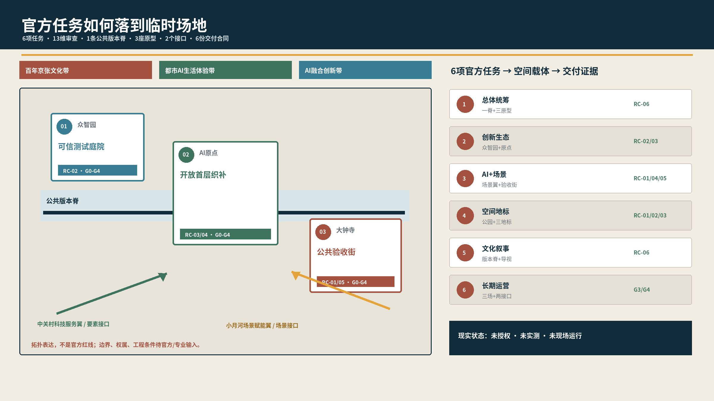
官方任务到场地与专业交接
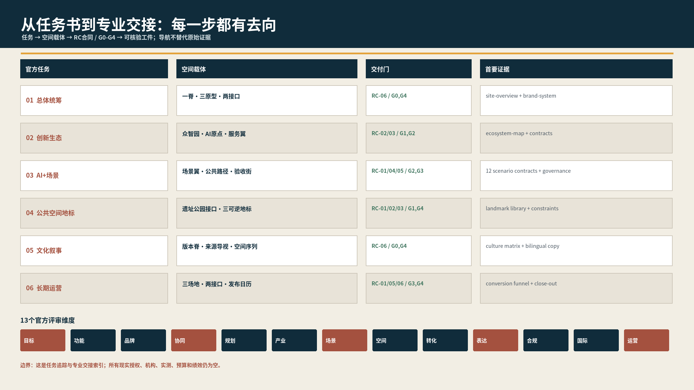
visual/assets/official_brief_trace.json 是任务书的首读追踪表：6 项官方任务逐项连接空间载体、RC 合同、G0-G4 门和原始证据；visual/assets/key_area_handoff.json 将众智园、AI 原点、大钟寺三重点区分别拆成 4 步空间序列、角色类型、进入证据、暂停条件、恢复回执和缺失的官方输入。两份工件只做导航与专业交接，不把临时几何升级为官方红线，也不把角色类型写成已确认机构。
评委可按同一条路径复核：任务书 → 一脊/三原型/两接口 → RC-01—RC-06 → G0-G4 → 回执与现实边界。当前所有重点区的现实状态仍为“未授权、未实测、未现场运行”；任何后续现场工作都必须由权属、文保、消防、无障碍、隐私、运营和预算等专业责任方补齐证据后再进入下一道门。
专业深化入口分为两层：现有空间序列、角色类型、停止/恢复规则和证据模板可直接进入 G1/G2 案头专业审查；权属授权、实测边界、消防/无障碍/文保结论、现场基线、真实责任机构、工程量、询价与预算未形成，因此不可进入采购、施工或 G3 现场试点。最终双语渲染记录见 visual/assets/render_audit.json：4 份 HTML 在 1440px/390px 共 8 个视口通过，A3/A0 双语共 48 页无空白或裁切；这是参与者侧表达 QA，不是独立认证。
三层范围工作框架
43.6 平方公里统筹层负责跨区域创新网络，约 11.4 平方公里总体层负责公共脊梁与城市更新结构，368.4 公顷重点层负责三座可验证原型。三层共用一套“问题—空间—合同—证据”链，而不是三张独立概念图 深度。
空间结构升级为 1 条公共版本脊 + 3 座城市原型 + 2 个协作接口 + 12 份场景合同。京张遗址公园是可以持续更新但保留历史底板的“公共版本脊”；众智园承担安全与硬科技验证，原点社区承担开源成果与生活转化，大钟寺承担公共服务验收与国际传播；科技服务翼和小月河场景翼分别接入专业服务与真实问题 深度 空间数据。
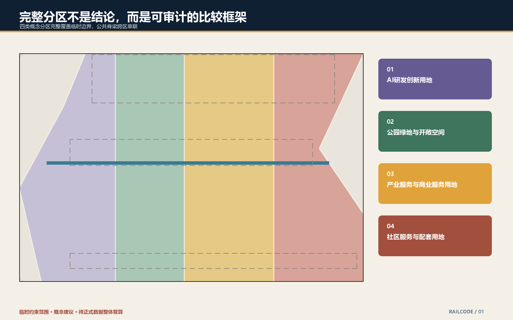
统筹研究范围产业与未来城市研究
RailCode Commons 的投稿识别由本方案原创绘制，并形成横排、竖排、单色和最小尺寸四种交付状态：轨道表示京张基础设施遗产，开放括号表示任何方案可被质询和补丁化，版本节点表示每次城市试验都有责任人、证据与退出记录。遗产深蓝、公共绿、砖红和验证琥珀为固定色板；字标使用 SIL Open Font License 1.1 的 Noto Sans SC，本包仅分发栅格结果和许可证文本，不分发字体文件。该组合标志可用于本次仓库投稿与社区展示，不代表官方品牌、注册商标或政府背书；任何第三方正式采用仍需独立品牌与商标审查。
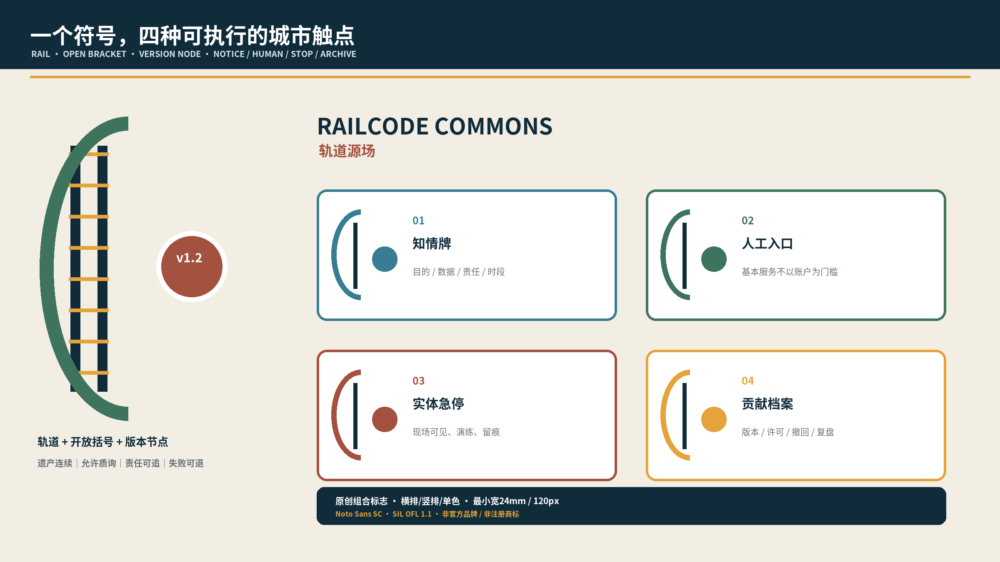
产业生态采用五步闭环：问题入库—能力组队—隔离验证—公共验收—有限扩展。问题必须有公开范围和受益群体；能力组队公开角色与利益冲突；验证优先使用模拟或授权数据；公共验收纳入居民、无障碍用户与专业人员；只有红线 KPI 全部通过才讨论扩展。众智园提供模型、端侧与安全能力，原点社区提供高校、开源、知识产权和人才服务，大钟寺提供终端、内容、企业服务与国际接口。该机制不等于任何机构已经参与，也不构成招商或投资承诺 深度。
六个国际参照不是“成功案例名单”，而是迁移边界测试：赫尔辛基 Kalasatama 提供真实生活试验的居民时间价值视角；新加坡 Punggol Digital District 提供园区—高校—数字基础设施协同；Barcelona 22@ 提醒创新区必须保留混合生活与社会基础设施；Toronto Quayside 证明数据治理不能晚于空间与采购；Montréal Mila 展示研究、人才和社区责任的邻近关系；新加坡 AI Verify 提供可复核测试工具链。每案只采用可公开核验的机制，不转录宣传性绩效数字，也不假定其治理、土地或资金制度可直接移植。完整来源、访问时间、可借鉴项与不可移植项见 visual/assets/global_case_studies.json。
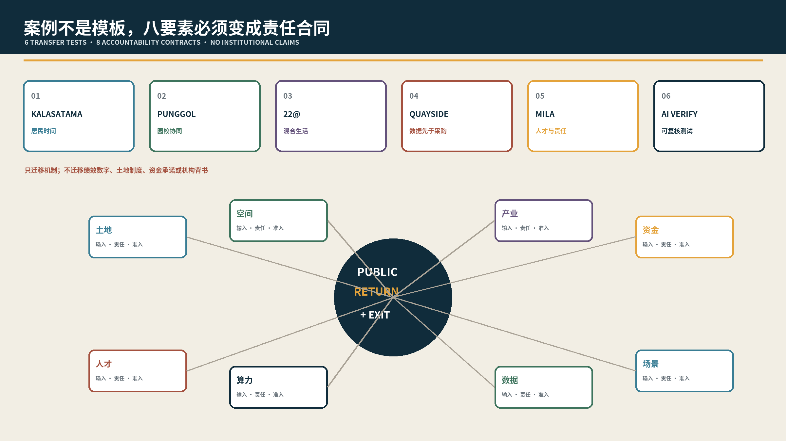
八要素不是招商清单，而是八份责任合同：土地只提供经清权的可逆试点容器；空间保证公共通行；产业提出可验证问题；资金按门拨付且覆盖撤除恢复；人才公开贡献与利益冲突；算力提交能耗、安全和降级边界；数据最小化并可撤回；场景保留人工、申诉和退出。每项均有输入、责任主体类型、准入门、公共回报和退出方式，详见 visual/assets/ecosystem_contracts.json。
区域协同以“可移植合同”而非放射线表达：北纬社区可作为近邻生活问题与无障碍共测接口，未来科学城/怀柔科学城可输出研究问题与评测方法，经开区可对接工程验证，京津冀城市可复用场景卡和审计格式。每次协同必须注明问题所有者、数据许可、试验边界、失败处置与成果开放级别；当前均为接口建议，不代表相关机构已参与。
五个接口已拆成可审查但未确认的协作合同：北纬社区提交日常生活/无障碍问题并形成去标识障碍清单；未来科学城和怀柔科学城分别贡献研究问题、方法或评测协议；经开区只接收通过 G2 的工程验证包；京津冀复用场景卡、来源卡和停止/退出格式。每份合同都记录问题所有者类型、输入、许可、输出、失败处置和开放等级，详见 visual/assets/regional_collaboration_contracts.json；没有合作方确认、许可记录和指定责任人时不得启动。
总体设计范围城市更新与控规深度城市设计
总体层坚持“保留适配优先、首层公共化其次、可逆构件先行、永久增量后置”。概念用地完整覆盖临时边界，但不替代法定分类 标准 深度。
建筑基底只表达空间容量原型，不代表现状盘点；每栋建筑进入动作判断前必须经过历史/文保、结构/消防、权属/使用、碳/经济四级证据门 空间数据 深度。
城市界面采用三类可复制构件：6 米“解释门廊”公开目的、数据和责任；18 米“共测庭院”支持有边界的试验与公众观察；30 米“公共首层带”并置人工服务、开源协作和日常生活。它们是相对尺度原型，不是道路红线、建筑退线或工程尺寸。容积率、密度、高度、停车与市政容量均保持 unknown 深度 深度。
重点区域详细设计
三处重点区不再共享同一套泛化语句，而采用三种不同的空间梯度、交付合同和停止条件。所有范围仍为 provisional 空间数据 深度。
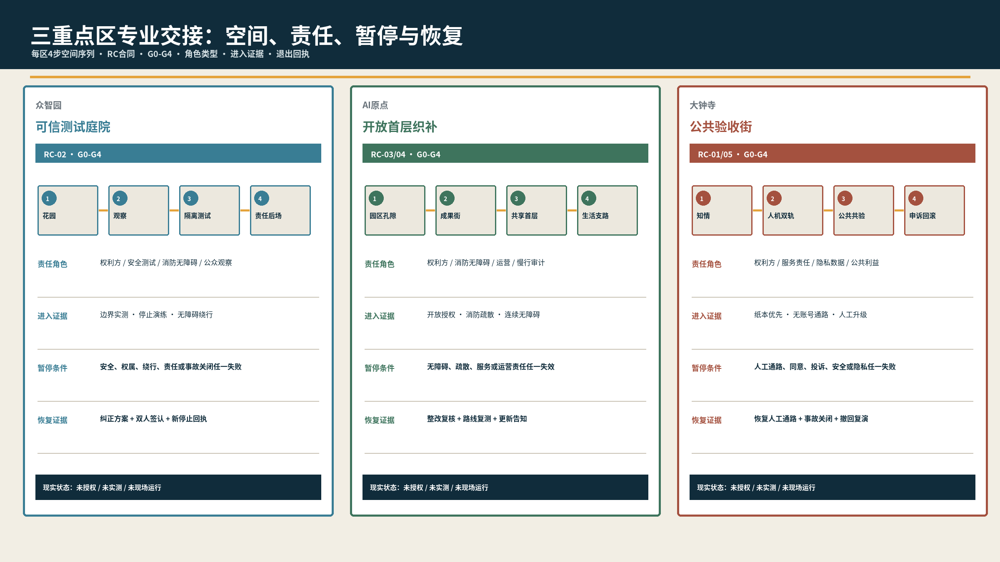
众智园：可信测试庭院 / Trust Court
空间序列是“清河公共花园—透明观察廊—可控测试庭院—研发后场”。公众不穿越后勤和设备运行线；观察廊能看到责任牌、测试时段、人工安全员和实体急停。首批交付为可撤除测试铺装、模型安全解释廊、端侧互操作庭院和低碳算力镜像。G1 权属/河道/消防核验、G2 隔离环境与急停演练、G3 限时预约试点依次通过才可开放；严重安全事件、越界采集或急停失效立即关闭。

AI 原点社区：开放首层织补 / Open-Ground-Floor Weave
空间序列是“校园园区孔隙—开放成果街—贡献者客厅—近校生活支路”。发布、版权清权、孵化、托育、健康和夜间协作交替出现，避免把创新区做成单一办公园。每个成果节点同时展示来源、许可证、人工联系人和撤回入口；基本通行和社区服务不以手机、账户或人脸为前提。首批交付为可追溯成果橱窗、无障碍共创台、时段共享首层和贡献者长桌；消防、权属、居民协商任一缺失即不激活。

大钟寺：公共验收街 / Public Acceptance Street
空间序列是 100 米相对尺度原型：0—20 米知情门廊，公开用途、数据、责任与开放时段；20—45 米双轨服务台，人工与 AI 并列；45—75 米公共共验庭，让居民、老人、残障者、专业人员共同测试；75—100 米申诉与回滚廊，提供纠错、删除、暂停和退出留痕。连续无障碍路径串联四段，所有设备可撤、不得侵占基本通行。该 100 米不是现状测绘、道路红线或工程线位 深度。

三座原型的共同原则是“空间先暴露责任”：使用者不用打开 App，也能在 30 秒内知道服务目的、采集什么、谁负责、如何转人工和怎样退出。
AI 创新生态、人才画像与 AI+ 场景
六类画像是开源研究者、初创团队、产业工程师、高校师生、周边居民、银龄/残障使用者；它们是任务驱动的需求假设，不来自个人跟踪。十二张场景卡升级为合同表：
| 场景 | 空间原型 | 最小数据与人工责任 | 成功门槛 / 暂停条件 |
|---|---|---|---|
| S01 开源发布厅 | 原点开放首层 | 主动投稿；版权/事实人工复核 | 来源与许可100%；侵权争议即下架 |
| S02 模型安全沙盒 | 众智园测试庭院 | 合成/授权集；双人复核 | 隔离、急停、复盘齐全；越界调用即停 |
| S03 端侧互操作场 | 众智园测试庭院 | 匿名事件日志；安全员最终负责 | 无严重事件；安全边界失效即停 |
| S04 低碳算力驿站 | 众智园解释廊 | 设施级聚合数据；工程师复核 | 只展示可核验能耗；容量不明不扩展 |
| S05 慢行导航 | 公共版本脊 | 聚合路况+主动反馈；运营员复核 | 不存连续个人轨迹；误导高风险即停 |
| S06 无障碍共测 | 原点—大钟寺 | 自愿障碍标注；顾问复核 | 基本路线可不用手机；阻断通行即停 |
| S07 成果转化台 | 原点开放首层 | 主动项目材料；法务/产业人工终审 | 不做黑箱筛选；利益冲突未披露即停 |
| S08 企业服务共驾 | 两翼接口 | 企业主动提交；专业人员最终决定 | 建议可解释；不得替代法律财务判断 |
| S09 数据授权会客厅 | 大钟寺验收街 | 授权/撤回日志；法务伦理复核 | 撤回可执行；授权不清即停 |
| S10 多语城市客厅 | 大钟寺公共客厅 | 当次文本最小留存；人工校核 | 关键内容有人审；歧义造成伤害即停 |
| S11 京张记忆导览 | 遗址公园 | 公开史料；文保编辑复核 | AI身份明示；虚构人物事件即下架 |
| S12 全球开源周 | 三地联动 | 发布者清权；策展人工审核 | 贡献可核验；不写成招商或政府排期 |
三类公共底线贯穿全部场景：高影响决定 100% 人工最终确认；默认生物识别与连续个人轨迹留存为 0；基本服务保留非数字通道 标准 标准 深度。
场景到专业责任的逐项锁定
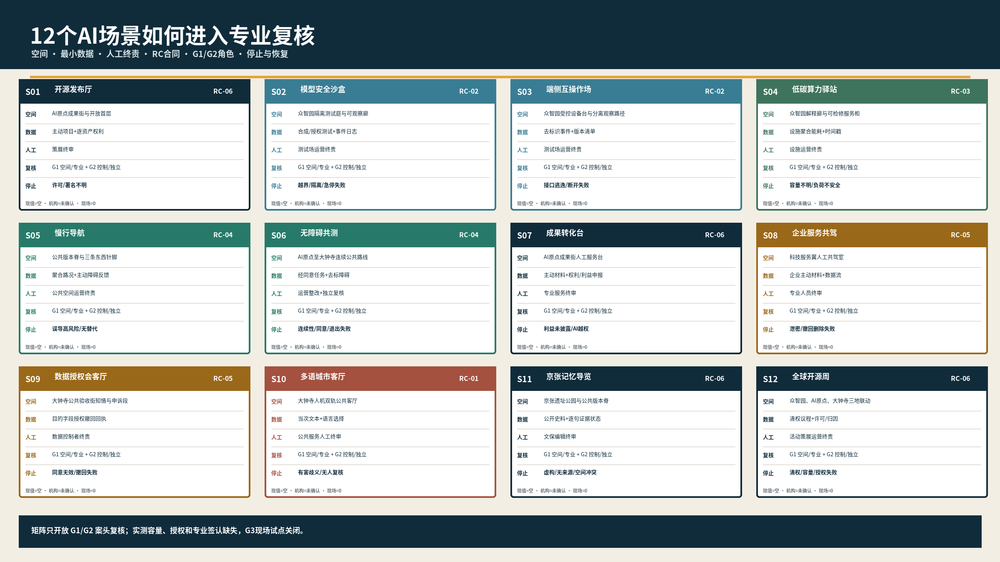
visual/assets/scenario_professional_review_matrix.json 将 S01—S12 逐项锁定到空间原型、最小数据、人工最终责任、RC 合同、G1 案头专业角色、G2 控制/独立复核角色、可测空间或容量代理、冲突/失败情景、暂停线和恢复证据。12/12 均有完整字段，但所有实测值仍为 null、真实机构确认为 0、现场证据为 0。这里的“可进入 G1/G2”仅指模板足以启动案头审查和演练设计；在权属、实测、专业结论、责任机构、预算与授权补齐前，G3 现场试点保持关闭。
agent.5 的文化线索不以“京张记忆”四字代替证据：铁路遗产脉络、大钟寺历史语境、学院路科教记忆、开源贡献史和社区日常记忆分别连接到公共版本脊、公共验收长桌、开放成果街、版本档案和居民共述点。每项同时登记史料来源、使用权利、空间载体和“已核/待核/创意”状态；只有公开来源和权利复核通过的事实才能进入导览，创意叙事必须显式标记且不得生成虚构人物事件。完整矩阵见 visual/assets/cultural_evidence_matrix.json。
无障碍共测在现场启动前采用独立计划：至少 12 次经同意的路线任务，覆盖银龄、行动、视听、认知/低数字能力及无智能设备使用者中的至少 3 类需求，并由 2 名独立专业复核角色检查。招募不得以服务权益为交换；只留去标识障碍、完成/失败和修复记录；参与者可随时退出。连续通行、替代信息、键盘访问或人工兜底任一失败即暂停并整改。当前没有招募或现场测试；包内人工可访问性 QA 仅检查 HTML/PDF/核心图件，详见 visual/assets/accessibility_qa.json。
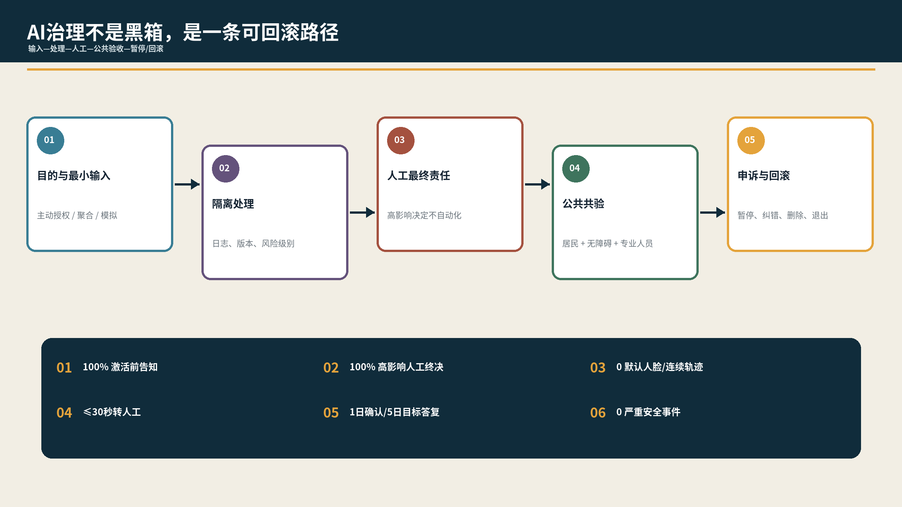
用地、建筑规模与拆改留方案
临时总体边界包内复算约 11.41 平方公里；设计绿地约 12.34%、公共空间约 7.33%、概念建筑基底约 31.08 万平方米。它们只用于当前 GeoJSON 一致性，不是现状、控规或审批指标 指标 指标 指标。
建筑动作使用四级“证据门票”：R0 仅登记待调查；R1 历史/结构/权属证据齐全后可保留适配；R2 消防、无障碍和运营评估通过后可开放首层；R3 只有法定程序与碳经济比较支持时才讨论永久更新。当前包不对任何真实建筑做拆改留结论。
用地与建筑的关系不以容积率假设倒推，而从公共版本脊的日常可达性校验：研发与公共服务界面优先落在可开放的首层，生活配套靠近慢行针脚，测试后场与公众流线分离。正式地块、道路与建筑资料到位后，应逐单元核对用地兼容、消防登高、日照、停车、装卸、产权和现状使用，再判断哪些原型保留、移动或取消；当前图层只能回答包内形态关系，不能回答法定开发容量 深度 深度。
交通、轨道、市政与公共服务设施
交通结构为南北公共版本脊、三条东西城市针脚和两翼专业接口。优先做地面连续、过街安全、骑行秩序、无障碍与轨道接驳；桥隧、地下连通和轨道一体化仅列为待比选课题 空间数据 深度。
市政采用“可拔插服务栈”：电力、通信、端侧算力、传感与维护接口共用可检修机柜，每个节点有断网降级、人工窗口和纸质/静态导视。能源、排水、防洪、消防、管线和网络安全容量未取得前，不输出工程规模 空间数据 深度。
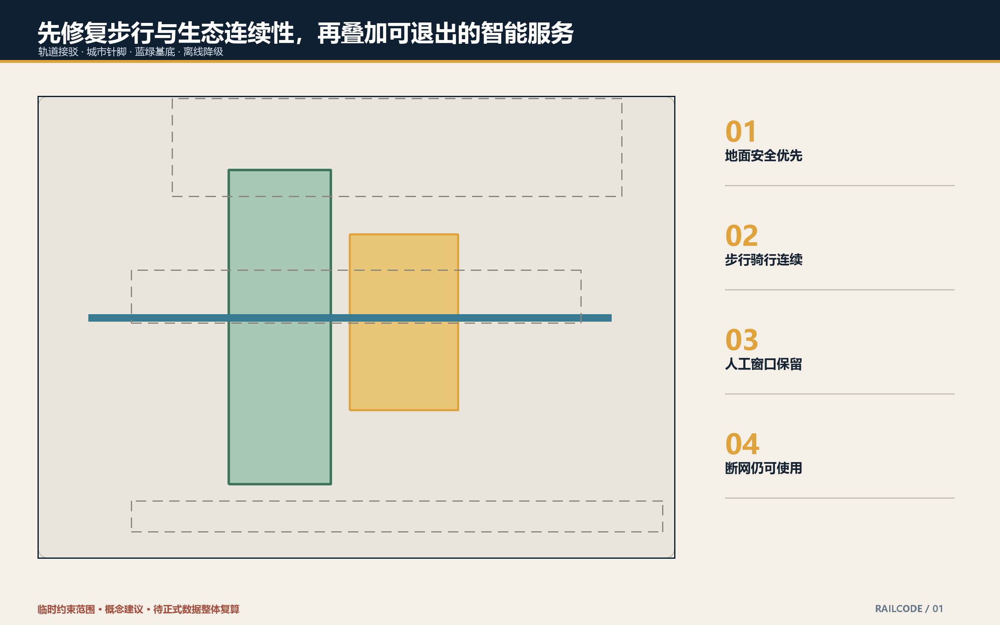
蓝绿空间、公共空间与城市风貌
遗址公园是第一会议室：保留轨迹和低饱和材料构成日常底板，测试设施只以可逆琥珀节点出现。蓝绿空间兼顾步行、骑行、雨洪、降温、休息和公众复盘，但不把河道、公园或文保空间当成免责试验场 空间数据 深度。
四个贡献节点分别是安全之镜、开源星图、公共验收长桌和百年算法年轮。展示的是可核验贡献、失败与修复，不塑造个人崇拜；姓名、商标、论文图和肖像仅在许可后进入。
三处“朝圣地标”被重新定义为公共学习设施，而非巨型装置：众智园 可信观察环 让安全边界、测试版本和实体急停可见；AI 原点 开源版本原点 以可触摸轨道/开放括号标记记录来源、许可和撤回；大钟寺 公共验收长桌 并置人工服务、AI 演示、共测与申诉。三者均不得占用基本通行，采用可逆构造，有唯一维护责任人和停止条件；与四个贡献展示节点分开管理。完整地标目录和四类组件库见 visual/assets/landmark_component_library.json。
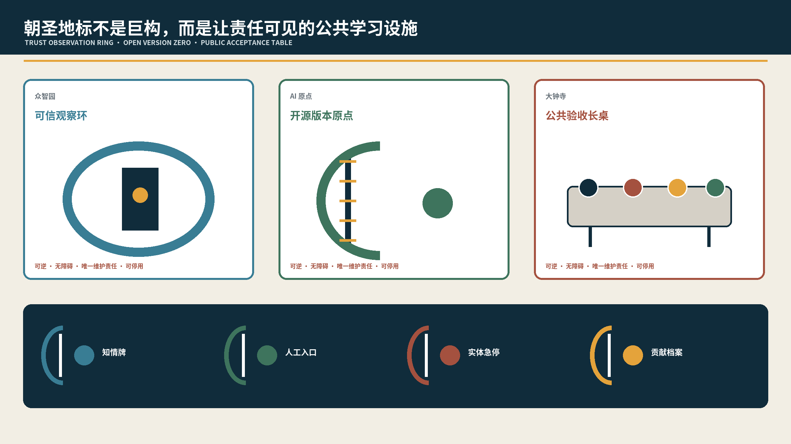
风貌控制把技术可见度限制在“近人尺度”：信息灯、责任牌和可拆设备服务于理解与安全，巨型屏幕、霓虹塔和压倒遗产的装置被排除。绿地比例和公共空间比例来自设计包络的 union 复算，不等同于法定 1401 绿地、广场红线或现状开放率。正式河道蓝线、绿线、树木调查、海绵专项和文保影响评价到位后，必须优先调整测试节点、夜景照明和活动承载量 指标 空间数据 深度。
更新项目清单、实施政策与分期计划
实施不按“大面积着色”推进，而用 G0—G4 五道门：G0 数据/版权清权；G1 权属、文保、交通、市政、消防、无障碍专业核验；G2 沙盒、责任人、急停和申诉演练；G3 90 天限时试点；G4 独立评估决定适配、扩展或退出 空间数据 深度。
首批六项最小交付合同如下：
| 合同 | 位置 | 0—30天 | 31—60天 | 61—90天 | 唯一A角色 | 成本带 | 停止条件 |
|---|---|---|---|---|---|---|---|
| RC-01 公共验收街 | 大钟寺 | 基线/共走/责任清单 | 离线模拟、人工主导 | 限时公共验收 | 场地运营者 | L1-L2 | 红线KPI任一失败 |
| RC-02 可信测试庭院 | 众智园 | 隔离与安全边界 | 急停/观众边界演练 | 预约测试 | 测试运营者 | L2 | 严重事件或越界采集 |
| RC-03 开放首层织补 | 原点社区 | 权属/消防/居民协商 | 时段共享模拟 | 小规模开放 | 物业/园区运营者 | L1-L2 | 通行或消防受损 |
| RC-04 无障碍共测线 | 三地接口 | 障碍基线 | 人工路线校核 | 公开共测 | 公共空间运营者 | L1 | 基本通行不连续 |
| RC-05 数据授权会客厅 | 大钟寺 | 授权模板/责任人 | 撤回演练 | 限定场景服务 | 数据处理责任方 | L1 | 撤回或删除不可执行 |
| RC-06 贡献档案协议 | 三地 | 清权规则 | 开源记录试存 | 年度发布 | 策展运营者 | L1 | 来源或许可不可核验 |
成本带用于方案比选而非报价：L0 为不新增设备的运营/制度调整；L1 为导视、家具、轻型端侧设备和可撤构件；L2 为涉及场地、机电、消防或专业集成的有限改造。任何 L1/L2 合同进入 G1 前，必须取得按工程量清单拆分的资本支出、年度运营支出、维护责任、撤除与恢复费用；在场地尺寸、设备清单和市场询价缺失时不编造人民币总价。
六条红线 KPI：激活前告知 100%；高影响输出人工最终决定 100%；基本服务强制手机/账户/人脸门槛为 0；转人工目标不超过 30 秒；申诉 1 个工作日确认、5 个工作日目标答复；严重安全事件目标为 0。它们是试点自设目标，不是法规数字时限或现状成绩 指标 指标 指标。
六份合同的基线采集、最小样本、验收记录、证据留存和责任角色确认状态见 visual/assets/delivery_contracts.json。本版本为每份合同保留前置证据、暂停权、恢复证据与双人签认：运营角色可以先暂停，只有原失败项关闭、记录留档且“责任角色 + 独立专业复核角色”共同签认，才进入下一轮受控运行。所有 A 角色目前均为建议角色类型、未确认机构；当前统一状态为未获授权、未现场运行。只有完成 G1 专业核验、工程量清单和资本/运营/维护/撤除恢复四类费用拆分后，L1/L2 才能进入预算与采购讨论。
G3 前委托与关门计划
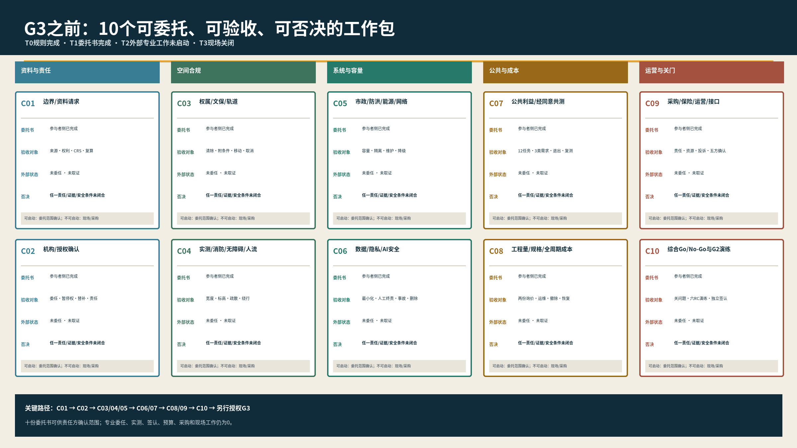
visual/assets/pre_g3_commissioning_plan.json 把现实缺口转成 C01—C10 十个可委托包：正式几何/资料请求、责任机构/授权、权属文保轨道、实测消防无障碍人流、市政防洪能源网络、数据隐私 AI 安全、公共利益共测、工程量/规格/全周期成本、采购保险运营/五个区域接口、综合 Go/No-Go 与 G2 演练。每包均有责任角色类型、专业角色、已准备交付物、外部输入、依赖、验收定义和一票否决条件。
就绪梯度明确分层：T0 规则与合成复演完成；T1 十份参与者侧委托书完成，可立即由有权责任方确认委托范围；T2 专业委任、实测、结论、工程量、询价和签认尚未启动；T3 采购、施工、真实数据、招募和 G3 现场试点关闭。它证明的是“下一步如何被真实专业团队接手”，不把准备好的委托范围误写成已经取得的现场证据。
每份合同另有一张实施前置表，将场地/权利证据、候选责任方确认方法、必需专业、授权文件、基线与最小样本、资本/运营/维护/撤除恢复费用、关闭条件逐项列出。所有单元均保持 not_started 或 unconfirmed，不填写机构名称和虚假金额；表格就在 visual/assets/delivery_contracts.json 的 implementation_preflight 字段。
visual/assets/implementation_readiness.json 是实施就绪索引：它把 G0—G4 的决策、所需记录、当前状态和 RC-01—RC-06 对齐。五道门当前均为 not_started，这不是缺页，而是对现实证据状态的明确登记；任何“已运营、已放行、已达标”的推断均不成立。
为验证合同不是静态文字，包内保留零网络、零个人数据、零现场输入的 RC 桌面演练包。每份合同包含 1 条全字段合成通过分支，以及“责任方未确认、工程量/成本未闭合、事故未关闭”3 条拒绝或暂停分支；node visual/assets/rc-tabletop/run_tabletop.js 可重放 24 个案例，当前 24/24 与预期一致，其中通过 6、拒绝/暂停 18、现场运行 0。该结果只证明参与者编写的规则和回执格式可执行，不证明授权、安全、公众接受、工程或预算 指标 指标。
visual/assets/quantity_cost_method.json 把每份 RC 的工程量对象、计量单位、测量依据、规格、询价证据和资本/年度运营/维护/撤除/恢复五类费用公式逐项列明。所有数量、单价、币种、基准日、税费和预备费率保持空值；只有实测、规格和至少两项可比询价或获批计价依据齐备后才能计算。这个工件关闭了“没有成本方法”的材料缺口，但不虚构现实预算 指标。
visual/assets/review_evidence_map.json 将七维评审问题各自指向 3 个首要证据入口；它是导航，不替代原始 JSON、GeoJSON、正文或图纸 指标。
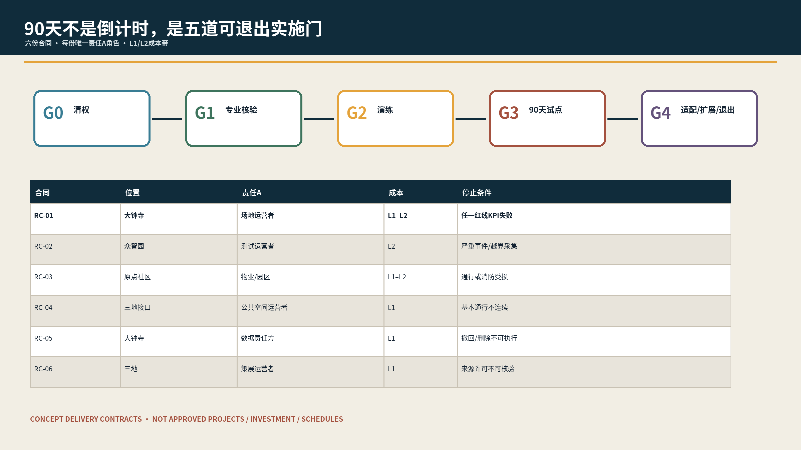
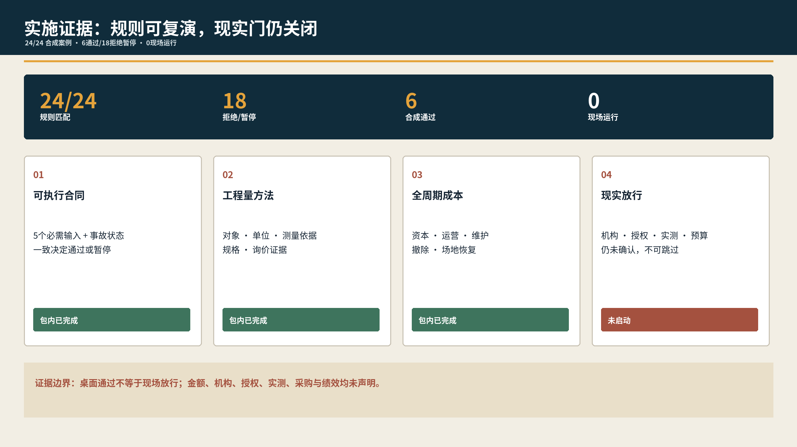
年度运营采用“一库两会四季”：问题与失败复盘库持续开放；季度公共利益委员会和年度专业复核会分开；四季开展开源贡献、城市共测、国际比较和档案复盘。每个场景保留唯一具名责任人，委员会不能稀释事故责任，也不替代法定审批 深度 深度。
agent.6 的开发者转化不是报名人数叙事，而是 加入—共创—测试—发布—复用 五级漏斗：加入提交能力/利益冲突与行为准则；共创形成问题合同；测试提交沙盒、急停与评测记录；发布完成来源、许可、人工复核和撤回入口；复用必须保留版本、责任、限制和失败日志。每级明确负责人类型、资源输入、输出证据、复盘周期与停止条件，年度“开源贡献季—城市共测季—国际比较季—档案复盘季”只在前一季证据闭合后进入下一季。详见 visual/assets/developer_conversion_funnel.json；当前没有已加入开发者、活动主办方、国际招引或转化绩效主张。
指标体系、面积复算与合规矩阵
空间指标统一从 GeoJSON 投影复算；非空间指标只计数提交包中可定位的场景卡、合同和验收门。当前记录 3 个重点区、12 个场景、6 类画像和 3 类产业测试 指标 指标 指标。
同一证据层还记录 4 个贡献节点、6 份最小交付合同、5 道实施门和 6 条红线 KPI；这些是方案内计数与试点目标，不是现状绩效 指标 深度。
任务书、标准和设计深度分别由 compliance_matrix.json、standard_matrix.json、design_depth_matrix.json 保存完整机器证据。正文以锚点连接判断，不用编号堆砌替代设计 深度 深度。
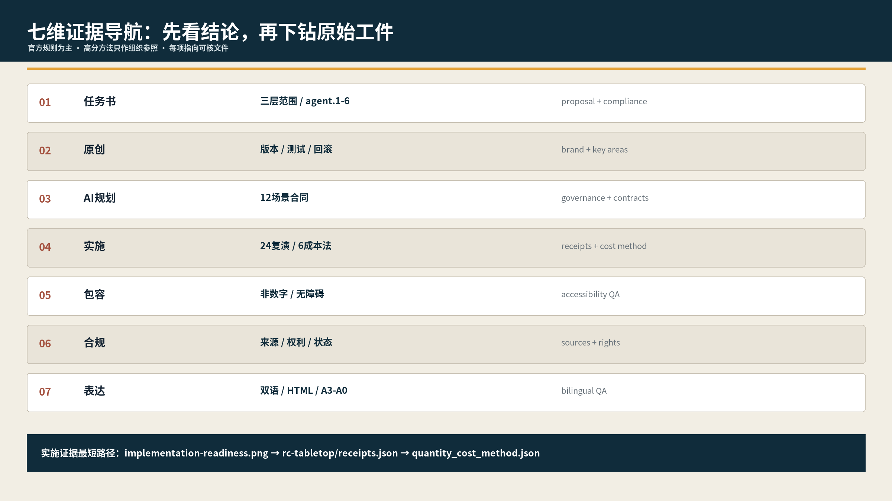
风险、版权与合规说明
第一风险是临时边界误读：所有范围、面积与选址均注明 provisional，official data 到位必须整体复算 来源 深度。第二风险是“智慧”压过公共权利：全部场景保留人工服务、停止、申诉、纠错和删除机制。第三风险是场景板误导：封面与三张场景板均由本地 Python/Pillow 代码从方案空间合同原创绘制，不使用生成图像服务、现场照片、居民意见或第三方素材，也不是红线、获批方案或工程证据；结构化数据和专业图件优先。第四风险是版权和隐私：不使用商业地图截图、新闻照片、未经授权的企业材料、未授权商标或可识别真实人物。
逐资产权利链见 visual/assets/asset_rights_ledger.json：正文、图表、PDF、离线网页、封面和三张场景板均为本次原创；场景板由本地 Python/Pillow 代码绘制，不调用图像生成服务；Noto Sans SC 按 SIL Open Font License 1.1 在本机栅格化，许可证文本随包保留但字体文件不分发；六个案例只保留公开链接和原创机制摘要，不复制网页文字、图片、Logo 或宣传绩效；本地生成器不进入投稿目录。
本方案不构成政府审定、投资承诺、工程可行性、招商结果或实施排期。所有专业控制需由正式资料、现场调查、公众参与与法定程序确认。
参考资料
正式依据是官方公告、清权 agent 任务书和仓库标准快照；临时边界仅是生成与自检容器 来源 来源 来源。机器证据依次为 geometry/*.geojson、metrics.json、三类矩阵、任务专属 JSON、manifest/sources/assumptions/self_check；人类阅读层是中英正文、十组图件、三张合成场景、离线 HTML、A3 文册和 A0 展板。
来源的用途不是“列得越多越可信”，而是限制每项结论能说到哪里：官方公告支撑任务与面积约值，任务书支撑智能体原则和功能框架，标准快照支撑专业回应，临时 polygon 只支撑包内空间关系。凡是依赖现场、权属、法规适用、运营绩效或机构合作的判断，都必须在下一轮取得相应证据后再升级；当前 sources.json、assumptions.json 和三类矩阵共同记录这些边界 来源 深度。
当 official polygons 或专业底图发布时，更新流程是：验证来源与坐标系，替换场地和重点区，重建用地/道路/绿地/公共空间/建筑/分期，重算指标，重绘全部成果，重新跑四道门禁。禁止只替换总览图而保留旧面积、旧片区关系或旧实施判断 深度 深度。